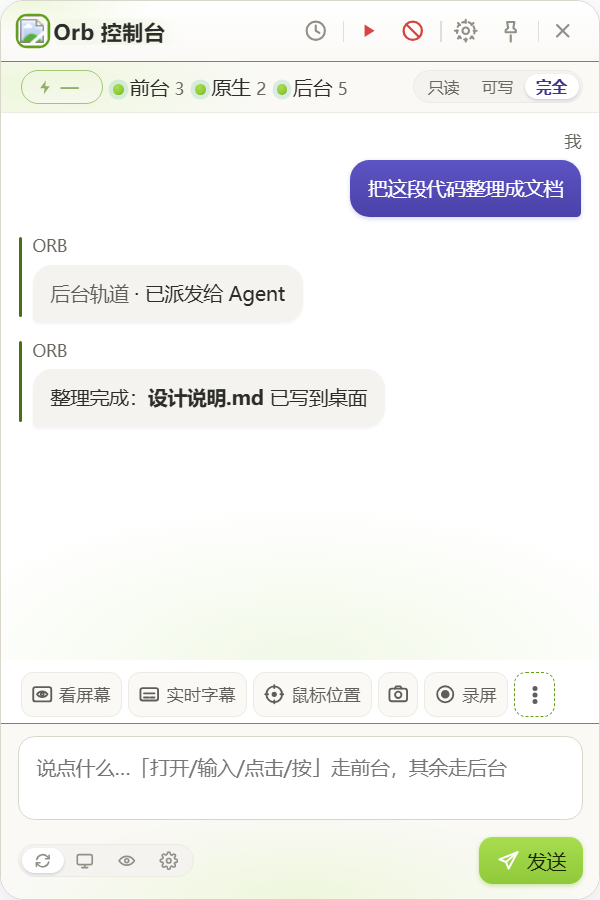
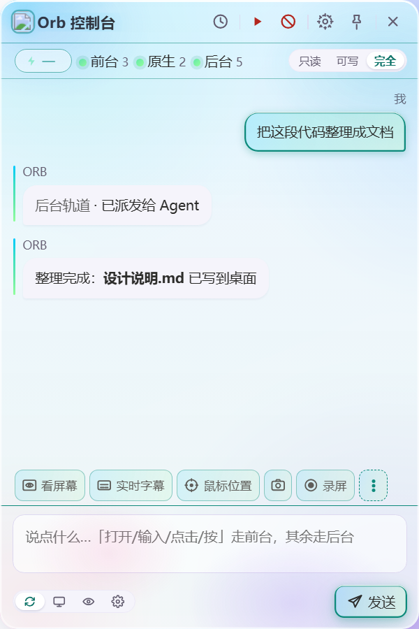
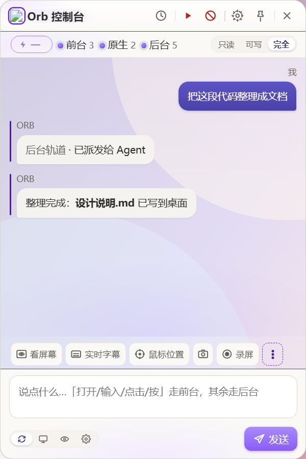

下面是 ORB 前台执行时的真实过程回放：截图 → 视觉模型给出坐标 → 点击 → 输入 → 完成。 换个句子再跑一次，节奏完全一样。
演示为脚本化回放，用于说明执行流程；真机上这些动作由视觉模型 逐帧决策，坐标用 0–1000 千分比表示，避免高分辨率下数错位置。
也可以手动指定。三条轨道覆盖"手上的活"和"动脑的活"，失败会自动切备选模型。
直接操作你的电脑：点击、输入、快捷键、滚动、长按、拖动。原生 C 写的鼠标原语，不走合成事件。
把重活派给本机 Agent（headless 一次性执行），跑完自动回填结果，不占你的桌面。
「截图 → 视觉模型 → 动作 → 再截图」的闭环，模型自己决定下一步点哪里，没有 API 的软件也能驱动。
安全不是附加功能，是 ORB 的第一功能。以下每一条都已经在代码里，不在计划里。
Ctrl + Alt + Backspace 一键中断， 顶栏也有红色急停按钮。随时可打断，不留后台动作。
只读 / 工作区可写 / 完全访问，随会话保存。 不开「完全访问」就不会有视觉循环。
前台执行时，被操作的目标窗口会亮起一圈边框 —— 你能实时看到"它正在操作谁"。
删除、支付、发送等不可逆操作，模型必须先发起确认，60 秒不点自动拒绝。
桥进程每个接口都要进程启动时随机生成的令牌， 只监听 127.0.0.1。浏览器里的任意网页遥控不了你的电脑。
项目不含任何遥测。密钥只在内存里过一遍，不落盘、不写日志。
深空与自定义主题可开毛玻璃 —— 模糊的是真实桌面（自合成抓屏，不是 backdrop-filter 取不到的那层）。



首次运行会弹 SmartScreen（项目尚未购买代码签名证书）， 选「更多信息 → 仍要运行」即可。三条证书路线的评估写在仓库 docs 里。